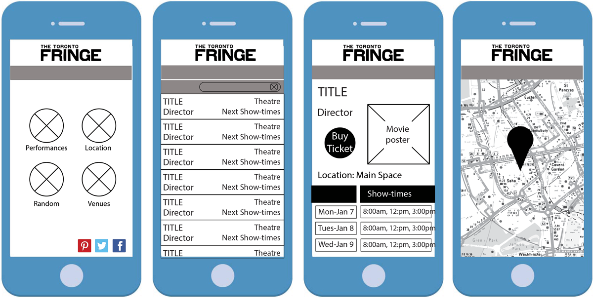

Build a mobile application that will enhance the experience of those attending the Toronto Fringe Festival.
Working with a classmate, we decided we conducted an ethnographic study, asking performing arts students and faculty at Sheridan College to participate. We chose this demographic as we thought they were most likely to attend the Fringe Festival. We asked this audience how they would get to the festival, who they would go with, and if they would have a certain show in mind before going. The festival offers a spontaneity aspect and it was beneficial to see how much potential goers would plan their trip. In addition to our ethnographic study, we also conducted a competitor analysis.
Conceptualization PhaseWe created wireframes and printed them off to give us the freedom to use our paper prototypes and quickly make changes if necessary. We added a 'Random' feature to add to the Fringe Festival vibe, where performances are picked by lottery each year to perform in the festival.
As it happens with many apps and design, our final design does not look exactly like how our wireframes did but it adapted into something that was much more usable to our audience, which was made clear after our paper prototyping results.
Taking inspiration from other film and stage related designs, apps and websites, we established a few different style tiles to create what we felt was the overall best look for the app and yet still held true to the nature of The Toronto Fringe Festival.
AffordancesProcedural: The Fringe app will aid Fringe goers throughout their festival experience. This app will have multiple functions, including theatre locations and information, performance listings, performance details, and a performance roulette. All of which can be shared via the share button to select social media websites.
Participatory: Users can navigate through the app to find out more information on performances. They can view the location and address of theatres on the map page. Users can also share their favourite performances or ones they plan on attending through Facebook and Twitter.
Encyclopedic: This app will help festival-goers plan their nights when attending Toronto Fringe Festival. It can help them make up their mind when it comes to which performance they should attend. The maps will be generated by Google Maps and the performance listings and details will be taken from the content provided in Fringe’s festival brochure and online content.
Spatial: Users can use the app either while attending Toronto Fringe or planning to attend. They will likely use it for addresses and time scheduling more than for details on specific performances. They will also be viewing them when a friend or family member has shared the app information with them.
OutcomeUsers are able to navigate through to check out venue maps, entertainment details and listings, and choose a performance based on their roulette wheel spin. The final application prototype was built using HTML, CSS, Javascript with Foundation frameworks and PhoneGap.